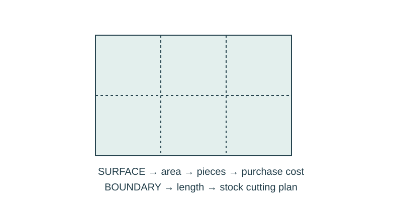

Job 04 · Estimate a display surface
A covering-and-border takeoff with a piece layout and simulated quote.
110 minutes • Tape measure + pocket notebook • Name: __________________ Date: __________
Materials: Tape, notebook, paper, scissors, pencil, calculator after setting up the math.

Brief · 12 min
- Point to the surface and then its boundary. Which purchase uses square units and which uses length?
- Set up a dated notebook spread: sketch and readings on the left; calculation, decision, test, and revision on the right. Mark small sketches NTS unless drawn to a chosen scale.
- Work in pairs and rotate roles. Each student keeps an individual notebook and performs a tool action and a calculation.
Measure · 18 min
- Survey a reachable rectangular display area. Record width/height in inches, then convert to feet.
- For a shared purchasing exercise, use a model surface 4 × 6 ft. Paper rectangles will represent materials at 1 in = 1 ft.
- Separate covering area from border length in two labeled notebook sections.
Plan · 20 min
- Draw and cut the scaled panels and surface. Test that the panel orientation covers the rectangle.
- Make a cutting plan for two 6-ft and two 4-ft border pieces using three 8-ft strips. Show leftovers.
- List item, size, quantity, unit price, subtotal, and total. Prices are fictional classroom data, excluding tax and labor.
Worked example
Cover a 4 × 6 ft surface using 2 × 3 ft panels at $4 each. Border comes in 8-ft strips at $3 each. Assume no cutting loss in this paper model. Area = L × W; perimeter = 2 L + 2 W. Count whole purchasable pieces after checking layout. Area 24 ft²; four panels tile the surface. Perimeter 20 ft; three 8-ft strips supply 24 ft. Cost = 4×$4 + 3×$3 = $25.
Make · 28 min
- Assemble a paper proof of the panel layout. Keep offcuts visible.
- Have another pair recalculate quantities from your drawing.
- Repeat the takeoff for your measured surface using the same model materials; state any simplifying assumption.
Test · 20 min
- Panel count is supported by a layout, not area division alone.
- The stock plan can actually supply each border piece; no piece is longer than stock.
- Quote totals and all units can be traced to the drawing.
Explain · 12 min
- Complete the individual exit below before discussing answers.
- Add the test result, revision, and notebook page reference to your response. Use the notebook as evidence rather than retyping every page.
- Save the three selected responses and submit the lesson for teacher review. Show your physical work and notebook to the teacher. Clean up and return shared supplies.
Individual exit
A 3 × 5 ft board uses 1 × 1 ft covering squares at $0.50 each. Border is sold in 6-ft strips at $2 each; show a feasible plan for two 5-ft and two 3-ft edges. Find covering, border purchase, and total cost.